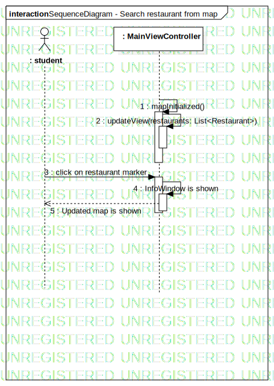

Interaction1
UMLInteraction
Safkaa saatana
::
Model1
::
Safkaa stna
::
Search restaurant from map
::
Interaction1
Description
none
Diagrams

SequenceDiagram - Search restaurant from map
Participants
: student
: MainViewController
Messages
Message1 (→)
Message2 (→)
click on restaurant marker (→)
InfoWindow is shown (→)
Updated map is shown (→)
Properties
Name
Value
name
Interaction1
stereotype
null
visibility
public
isReentrant
true
Owned Elements
SequenceDiagram - Search restaurant from map